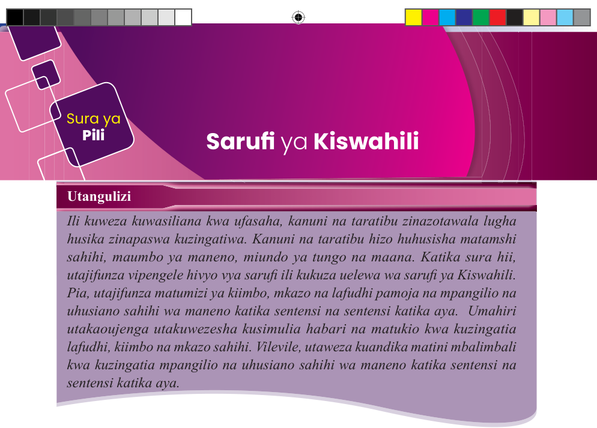
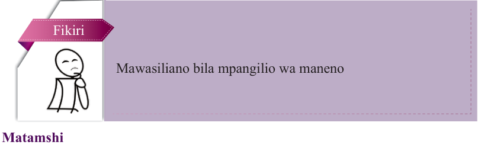

Sura ya Pili
Sarufi ya Kiswahili
Utangulizi
Ili kuweza kuwasiliana kwa ufasaha, kanuni na taratibu zinazotawala lugha husika zinapaswa kuzingatiwa. Kanuni na taratibu hizo huhusisha matamshi sahihi, maumbo ya maneno, miundo ya tungo na maana. Katika sura hii, utajifunza vipengele hivyo vya sarufi ili kukuza uelewa wa sarufi ya Kiswahili. Pia, utajifunza matumizi ya kiimbo, mkazo na lafudhi pamoja na mpangilio na uhusiano sahihi wa maneno katika sentensi na sentensi katika aya. Umahiri utakaoujenga utakuwezesha kusimulia habari na matukio kwa kuzingatia lafudhi, kiimbo na mkazo sahihi. Vilevile, utaweza kuandika matini mbalimbali kwa kuzingatia mpangilio na uhusiano sahihi wa maneno katika sentensi na sentensi katika aya.

Fikiri
Mawasiliano bila mpangilio wa maneno
Matamshi

Soma kisa kifuatacho, kisha jibu maswali yanayofuata.
Zukwe ni kijana aliyeishi katika Kijiji cha Misike kilichoko katika Wilaya ya Nduna mkoani Shobo. Kijana huyo alipenda sana kushiriki mazungumzo na vijana wenzake yaliyokuwa yakifanyika kijiweni wakati wa jioni baada ya kazi. Kijiwe hicho kiliitwa Bunguabongo kwa sababu vijana wengi waliopendelea kwenda mahali pale walikuwa wakiibua mazungumzo yaliyokuza fikra na kuwafanya wapate mwelekeo sahihi wa maisha.
Siku moja Zukwe, baada ya shughuli zake za ufugaji, alitembelea kijiweni kama ilivyokuwa ada yake. Alikwenda mahali pale kwa ajili ya kubadilishana mawazo na wenzake. Alipofika, aliwakuta vijana wenzake wakijadiliana kuhusu suala la ajira